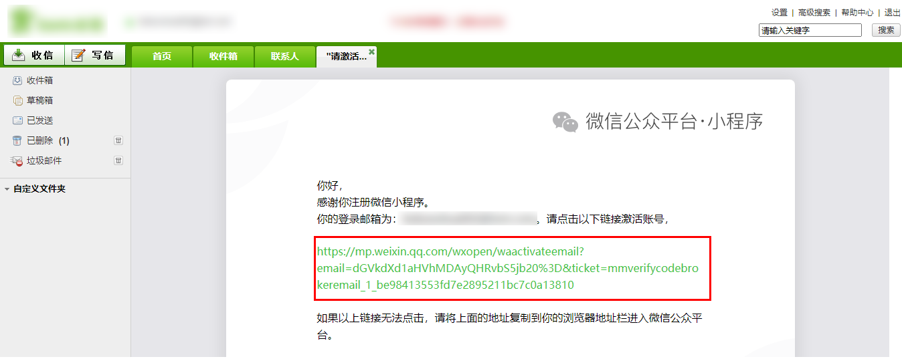
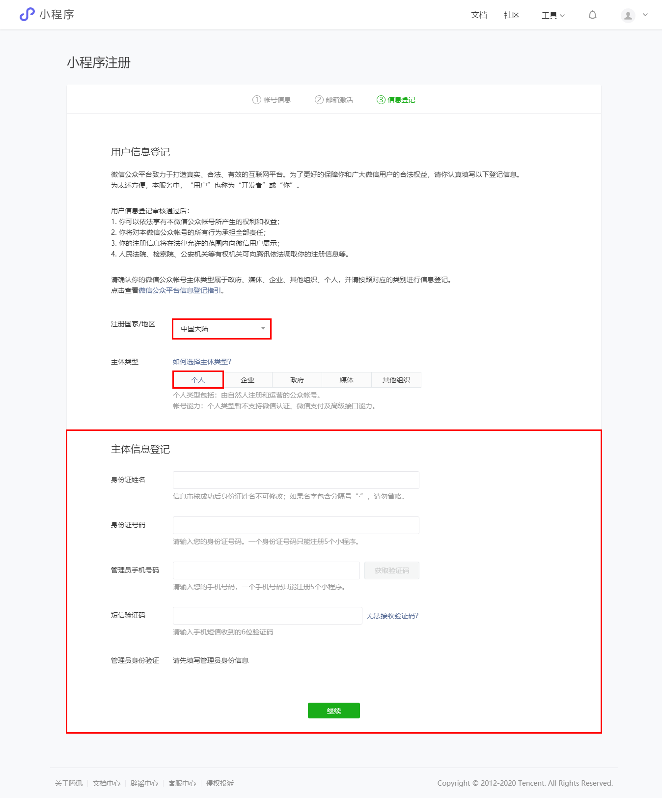
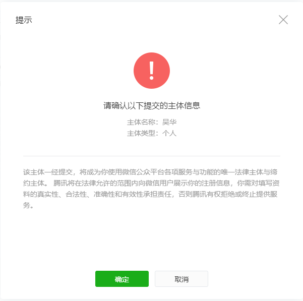
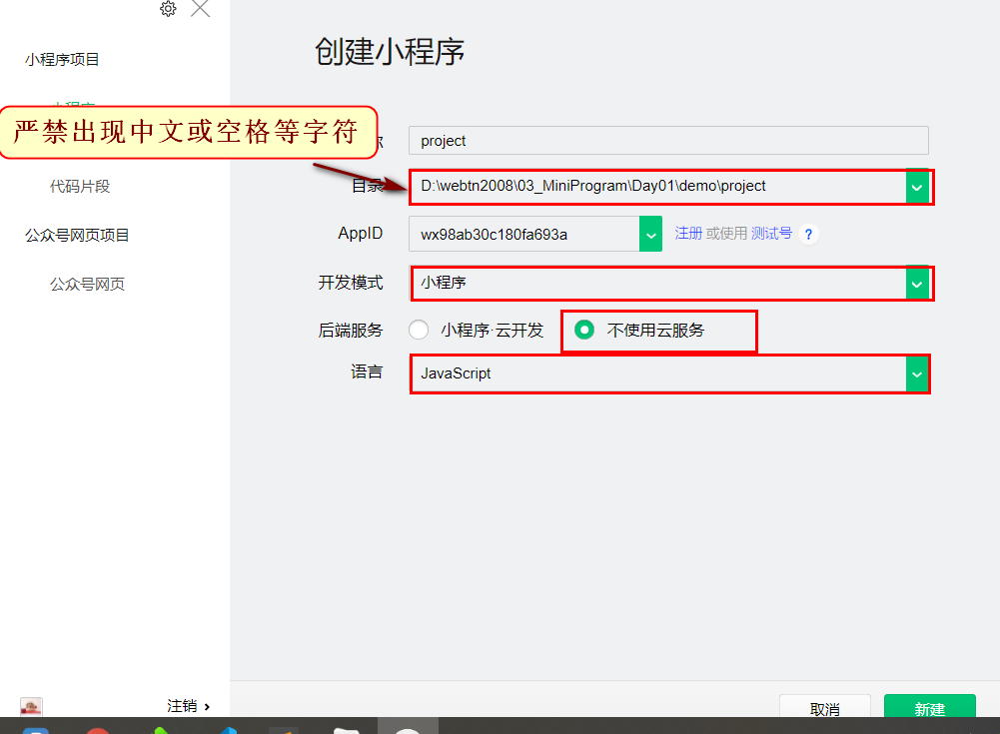
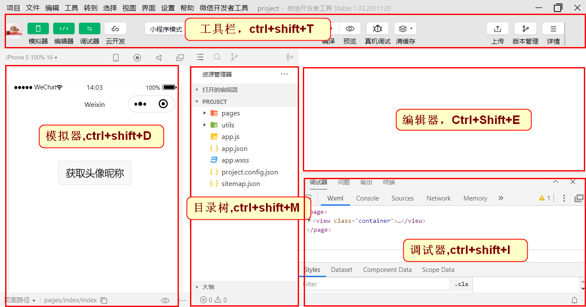

微信小程序 - Unit01
1.ECharts
1.1 echarts.init()方法
echarts.init()方法用于创建图表实例，其语法结构是：
xxxxxxxxxxvariable = echarts.init(HTMLDivElement|HTMLCanvasElement[,theme[,options]])
theme用于指定图表使用的主题主题的下载地址：https://echarts.apache.org/zh/download-theme.html
自定义主题地址：https://echarts.apache.org/zh/theme-builder.html
options用于指定图表的相关选项，为object类型，包括：
renderer，指图表的渲染引擎，可以为canvas或svg
1.2 配置项
x
instance.setOption({});· title组件
title用于对标题进行配置，其语法结构是：
x
title:{ text:"主标题文本", link:"主标题链接", target:"打开主标题链接的窗口形式(blank|self)", textStyle:{ color:"颜色", fontFamily:"字体列表,...", fontSize:字号(number), fontWeight:"bold|100|...900(string|number)", fontStyle:"noraml|italic", lineHeight:行高(number) }, subtext:"副标题文本", sublink:"副标题链接", subtarget:"打开副标题链接的窗口形式(blank|self)", subtextStyle:{ color:"颜色", fontFamily:"字体列表,...", fontSize:字号(number), fontWeight:"bold|100|...900(string|number)", fontStyle:"noraml|italic", lineHeight:行高(number) }, top:标题组件距容器顶部的距离(number|string(top|middle|bottom)), right:标题组件距容器右侧的距离(number|string(left|center|right)), bottom:标题组件距容器底部的距离(number|string(top|middle|bottom)) left:标题组件距容器左侧的距离(number|string(left|center|right)) }· xAxis组件
xAxis组件用于对X轴进行配置。
xxxxxxxxxxxAxis:{ type:"category(类目轴)", //data中的数据可以为string array | object array data:[]}2.微信小程序
2.1 微信公众平台
微信公众平台是由腾讯提供的，基于腾讯的微信服务器，为广大的企业、组织或个人提供用户管理或咨讯服务的平台。
微信公众平台提供的账号类型有：
· 服务号，为企业或组织提供的进行用户的管理和服务，侧重于服务，类似于114，如中国移动、中国联通等。
· 订阅号，为企业、组织或个人提供一种全新的消息传播方式，类似于免费的报刊，如CSDN、前端大全、达内教育等。
· 小程序，为企业、组织或个人提供的可以达到与原生APP相同功能的应用，其优点在于用完即走
微信公众平台的官网: https://mp.weixin.qq.com
2.2 小程序的接入流程
A.在微信公众平台注册开发者账号

B.填写注册信息

C.填写用户登记信息



2.3 创建小程序项目



2.4 小程序的文件组成
小程序的文件类型有：
· .json，配置文件
app.json，全局配置
page.json，页面配置，其优先级高于全局配置
· .wxml，模板文件，其类似于网页开发中的HTML，但不能使用任何的HTML标签，只能使用小程序专用的组件。
· .wxss，样式文件，其类似于网页开发中的CSS
app.wxss，全局样式
page.wxss，页面样式，其优先级高于全局样式
· .js，脚本文件
app.js，小程序的入口脚本文件
page.js，页面的脚本文件
app.json、app.wxss、app.js文件必须存储在小程序的根目录下
2.5 app.json
app.json用于对小程序进行全局配置。
JSON文件不能书写注释字符串必须括在英文双引号之间
数组中最后一个成员后不能存在逗号
JSON中不能存在undefined数据类型
· pages属性
pages属性用于指定小程序由哪些页面组成，每个页面由.json、.wxml、.wxss和.js组成
pages的数据类型为array默认情况下，数组中的第一项代表小程序的初始页面 -- 首页
x
{ "pages":[ "pages/index/index", "pages/me/me", "pages/logs/logs" ]}· window属性
window属性用于设置小程序导航栏、标题、窗口背景颜色等信息，object类型
x
{ "window":{ "navigationBarTitleText":"标题文本", "navigationBarTextStyle":"标题文本颜色(white|black)", "navigationBarBackgroundColor":"标题栏背景颜色", "enablePullDownRefresh":true|false, "backgroundTextStyle":"下拉刷新loading的样式(light|dark)", "backgroundColor":"窗口的背景颜色" }}· tabBar属性
tabBar属性用于配置小程序底部的选项卡，object类型
x
{ "tabBar":{ "postion":"选项卡的位置(top|bottom)", "color":"文本正常显示的颜色", "selectedColor":"文本被选中时的颜色", "backgroundColor":"底部选项卡的背景颜色", "borderStyle":"选项卡上边框的颜色(black|white)", "list":[ { "text":"文本内容", "pagePath":"页面的路径", "iconPath":"正常显示时的图片路径", "selectedIconPath":"被选中时的图片路径" } ] }}如果
position属性值为top的话，无法显示图标
list中至少包含2个，至5个选项卡
pagePath不能以/开头
iconPath和selectedIconPath不能使用网络路径图片尺寸建议为
81x81，字节数不能超过40KB
· style属性
style属性用于指定样式，目前值仅为v2(要求基础库版本>=2.8)，string类型
· siteMapLocation属性
siteMapLocation属性用于指定sitemap.json文件的位置，string类型
2.6 sitemap.json
sitemap.json用于制定爬虫的搜索规则，其基本结构是：
x
{ "rules":[ { "action":"动作类型(allow|disallow)", "page":"页面路径", "params":["路径参数1","路径参数2"], "matching":"匹配规则(exact|inclusive|exclusive|partial)" } ]}路径参数指
pages/article/article?cid=6&order=time中的cid和order
matching的规则包括：
exact，完全相同
inclusive，包含
exclusive，不包含
partial,部分包含
可在project.config.json 的setting中添加checkSiteMap:false语句
3.组件
· 关于组件属性
A.小程序中的组件既遵守驼峰标记法，也遵守短横线分隔法
B.布尔类型的数据无论其值为多少，结果都认为是true，除非该属性不存在；动态属性时只能使用true或false来表示。
· <view>组件
<view>组件为视图容器组件，其语法结构是：
x
<view hover-class="按下去的WXSS样式类名称" hover-start-time="多久后出现点击状(50)" hover-stay-time="点击状保持的时长(400)" hover-stop-propagation="是否阻止冒泡"> ...</view>课外作业：
预习image、swiper、scroll-view、input、slider等
下周四(2020年12月24日)下午18点之前完成小程序基本信息的填写